Join Tabular Data from CSV File

QGIS joins are temporary relationships between layers, or between tabular data (in .dbf or .csv formats) and spatial data layers. In this exercise we discuss preparation of the tabular data and the join process.
Before considering any table joins, the most vital aspect to consider is the JOIN FIELD. The join field must contain matching values (in the same format, such as STRING or INTEGER) in both the source table and the target layer. Placenames are usually NOT the best choice, because duplicates, capitalization, blank spaces, or other variations in the exact spelling used in either table will introduce many errors. Ideally, you want to use UNIQUE IDENTIFIERS for the values in the join field rather than placenames. For geospatial data, there are many standardized encoding systems that we can use for identifiers related to administrative divisions, such as FIPS Codes, or Chinese GBCODES, European NUTS codes, Japanese JCODES, and various other administrative coding systems.
Geonames has also become a de-facto standard for encoding points of interest [POI] world-wide. For example, the ID 4944413 is permanently associated with the place: Montague, MA, USA.
If you find that existing geographic codes do not work for your data, create your own set of UNIQUE IDs and don't alter them. Persistence of IDENTIFIERS help to keep your data organized and consistent.
Geonames has also become a de-facto standard for encoding points of interest [POI] world-wide. For example, the ID 4944413 is permanently associated with the place: Montague, MA, USA.
If you find that existing geographic codes do not work for your data, create your own set of UNIQUE IDs and don't alter them. Persistence of IDENTIFIERS help to keep your data organized and consistent.
The following exercise uses data from:
1. Workshop Data 2016-02-26 PART TWO Taiwan
1. Workshop Data 2016-02-26 PART TWO Taiwan
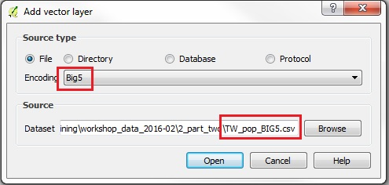
- Use ADD VECTOR LAYER button to open the sample file /TW_pop_BIG5.csv in QGIS (with Encoding = BIG5)
- Right-click on the layer in Layers Panel to Open Attribute Table
- Inspect contents to see if they look correct (readable characters, and no mixed data types in columns)
- Sort the intended JOIN FIELD (COUN_CODE) by Clicking on the Field Name (COUN_CODE) to make sure it does NOT have NULL values or blank cells
- Close the Attribute Table and right click on the Layer, then go to PROPERTIES | FIELDS
- Note the data TYPE for the JOIN FIELD (in this case QGIS imported the field as = String)
- If STRING is not the desired format for the field, you can assign a specific data type to each field when using the CSVT (see the following section on CSVT files)
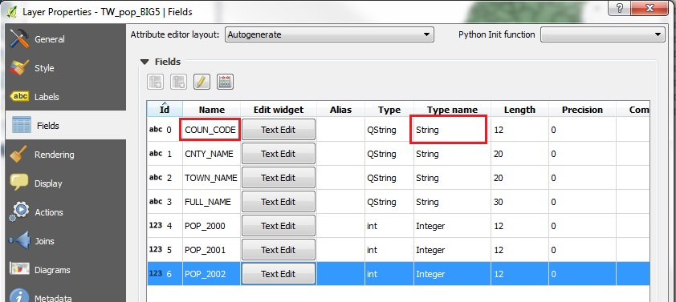
- Now we will use a CSVT file to define field formats for a .csv file
- In a text editor open the tutorial file: /TW_pop_BIG5.csvt
- You should see a single line in the file, like the following:
"String(12)","String(20)","String(20)","String(40)","Integer(12)","Integer(12)","Integer(12)"
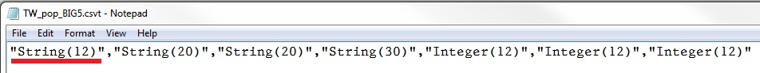
- Note that some fields are defined as STRING and others as INTEGER
- These can be modified to match the order and data types as they occur in any .csv file you want to import. In QGIS, when you add a .csv file that has an accompanying .csvt, it honors the formats defined in the .csvt!
- Also note that each field definition is wrapped in double-quotes and separated by commas. No comma after the last field definition!
- Make sure that the CSVT file is saved using the SAME FILENAME as the .csv file being defined.
- In this example, we saved the file as -> TW_pop_BIG5.csvt
- Make sure the file extension is .csvt, not .txt or some other default extension.
- More info on using csvt files here.
You may be tempted to open and view the .CSV table in EXCEL. Note, EXCEL may wreck the character set encoding of your files. An all-around excellent tabular data & spreadsheet application is LibreOffice Calc, which is freeware and runs on Windows, Linux and Mac. Like QGIS, the LibreOffice programs enable the selection of a codepage, both at the time of OPENING the file, and at the time of SAVING the file.
Open the sample file: TW_pop_xian80.shp in QGIS (with Encoding = BIG5)
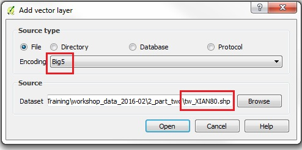
- Right-click on the layer in the Layer List and go to PROPERTIES | FIELDS
- Note that there is only one field in the Shapefile, and that it is STRING data type
- If both the tabular data in .CSV and the target spatial data layer have the same DATA TYPE for the JOIN FIED, then you can close the Attribute Table and proceed to the Join.
- If the DATA TYPES are NOT the same, you can REMOVE the .csv table form the Layers List, RESET the field type in the CSVT file for the specific field, then re-open the .csv table in QGIS. Changes in the CSVT should be seen in the Attribute Table of the .csv PROPERTIES | FIELDS.
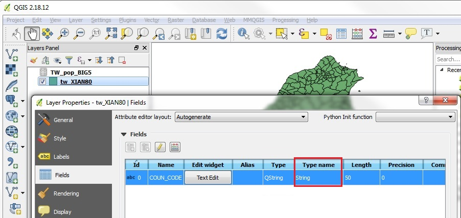
- The TARGET layer is the spatial data layer: TW_pop_xian80
- The SOURCE DATA file is the tabular data layer: TW_pop_BIG5.csv, which contains attributes that we want to join to the spatial objects
- Click on the TARGET Layer in the Layers Panel (TW_pop_xian80) to make it active, then right-click on that layer and select PROPERTIES
- In the Properties window, click on the JOIN tab, then the PLUS Sign button to ADD a JOIN
- For the JOIN LAYER, we select the SOURCE DATA .csv file (if you have many layers open, you will be able to select from the drop-down menu): TW_pop_BIG5
- For the JOIN FIELD, you choose the Field Name containing the JOIN ID in the JOIN LAYER, in this case COUN_CODE
- For the TARGET FIELD, you choose the Field Name with the JOIN ID in the Spatial Data file, in this case also called COUN_CODE
- Click OK, the APPLY to create the Join
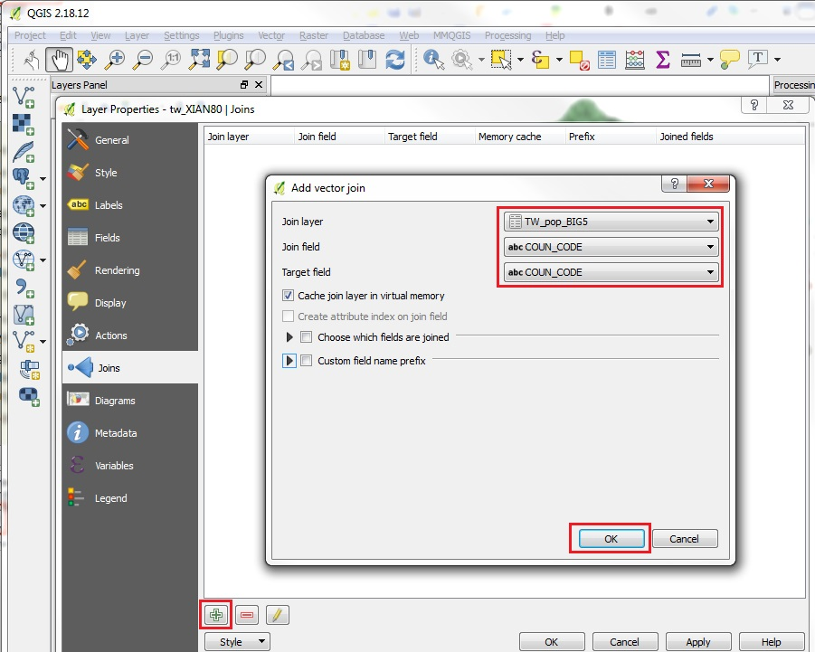
- Right-click on the Target Layer (TW_pop_xian80) and Open Attribute Table
- The table should now contain all the joined attributes
- In addition the COUN_CODE field, the table now shows the columns joined from the .csv file
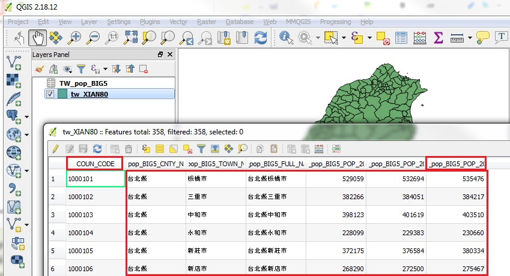
- But there is a problem!
- The Field Names generated by the join contain the Entire Filename of the SOURCE FILE, concatenated with the Source File Field Names. So, we ended up with many fields that are quite long. They can be seen if you drag the column width in the ATTRIBUTE TABLE view to expand each column horizontally
- Also, if you close the ATTRIBUTE TABLE, and go to examine the PROPERTIES | FIELDS of the Target Layer, you will see that the complete Field Names are there, such as: TW_pop_BIG5_POP_2000
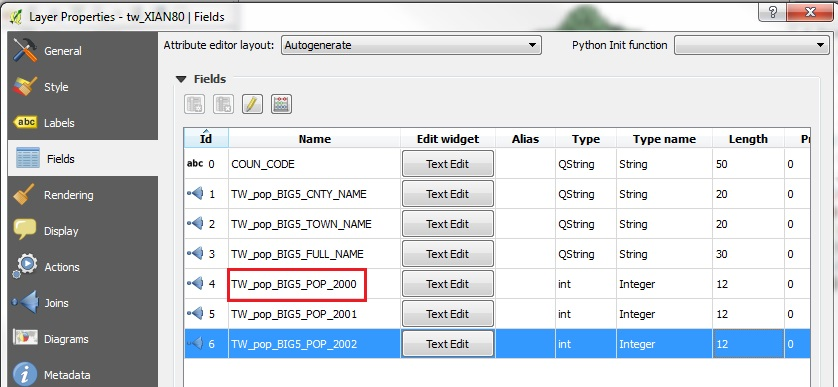
- Note that ArcGIS Shapefiles have a defined FIELD NAME limit of ten characters. Longer names can be held as an "alias" of the Field Name. But when saving to Shapefile these may not be preserved.
- One trick to get around this issue, is to RENAME both the .csv and the .csvt to a single letter filename. For example:
TW_pop_BIG5.csv -> renamed -> J.csv
TW_pop_BIG5.csv -> renamed -> J.csvt - To proceed with this operation, we first need to REMOVE THE JOIN by going to the target layer's PROPERTIES | JOINS tab and clicking the RED MINUS sign
- Then click OK
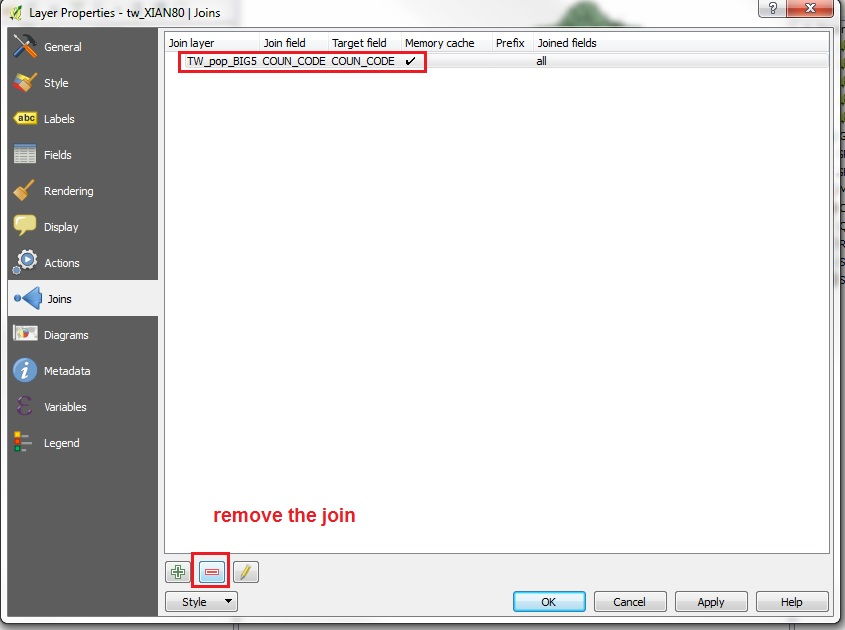
- With the temporary Join removed in our QGIS Project, we can rename or save new copies of the .csv and .csvt files, as described above
- Now add the new versions of the .csv SOURCE LAYER using the ADD VECTOR LAYER button
- Now you should have the tabular file in the Layers Panel: J
- Check the PROPERTIES | FIELDS of the J table to make sure the .csvt data type of STRING was correctly defined
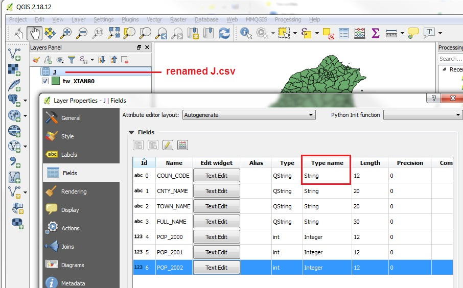
- Using the renamed J.csv file as the SOURCE LAYER, rerun the JOIN process
- The newly joined Attribute Table will have the concatenation of the Filename, for example: J_POP_2000
- Even within the constraints of 10 characters, this Field Name will not be truncated when saving to Shapefile
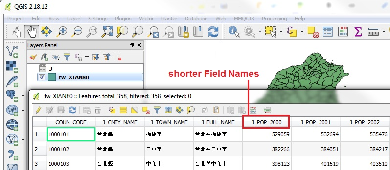
- Note: the JOIN is only a temporary relationship in QGIS. You should SAVE THE JOINED LAYER to a new Shapefile before proceeding
- Right-click on the TARGET LAYER in the Layers Panel, in the is case tw_XIAN80, then click SAVE AS
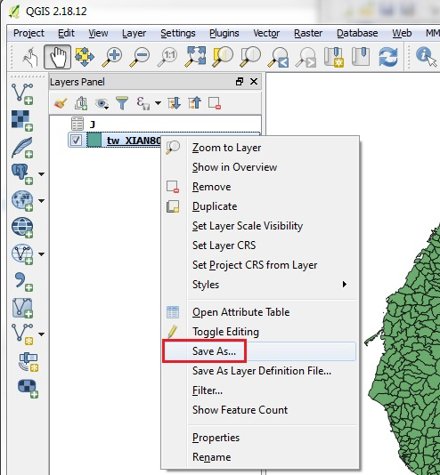
- In the SAVE VECTOR LAYER AS window, make sure you have the Format set to ESRI Shapefile
- Click on BROWSE and select a Folder and Filename, in this case I typed in the Filename: tw_XIAN80_JOIN
- CRS allows you to define the CRS for the new Shapefile. In this case we can keep the original CRS, EPSG 2333
- Encoding allows you to custom define an encoding for the data layer Character Set, in this case we will keep the Chinese BIG5 encoding
- Click OK to Save the new Shapefile
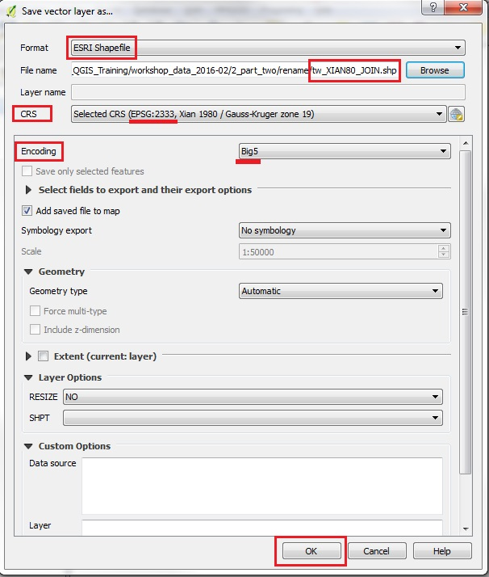
- By default the New SAVED Shapefile should be added to the Layers Panel
- Right-click on the new Layer tw_XIAN80_JOIN and check the Attribute Table
- Now all the columns from the .csv file are part of the Shapefile, and not held in a temporary join
- Note: It is important to save joins to Shapefiles in order to run many Spatial Analysis tools. Many processes will not work if you attempt to run them on data held in a temporary Join
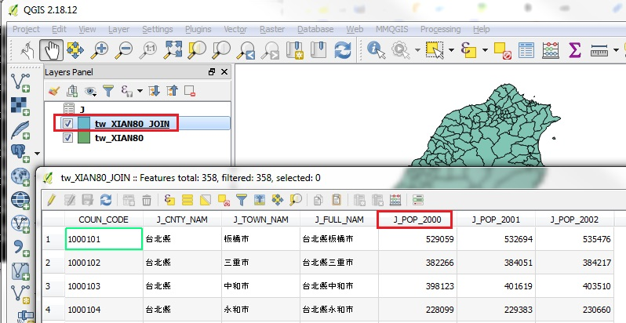
- Close the ATTRIBUTE TABLE and Right-click on the new Layer tw_XIAN80_JOIN to view the PROPERTIES | FIELDS tab
- You will see that, indeed, when we SAVED TO SHAPEFILE, the Field Names were truncated to ten characters!
- Our expedient of renaming the .csv file to J worked!.
- If we had NOT taken that step, when saving the Joined tabular data to a new Shapefile, the resulting field names would have been: TW_pop_BIG for ALL of the Joined Columns. Not very useful. Hope you appreciate the trick of renaming the .csv file to ONE LETTER.
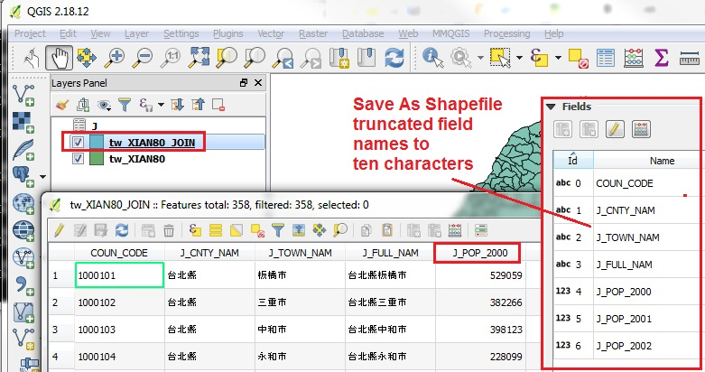
Proceed to Spaital Join Instructions